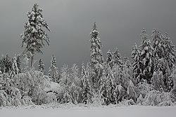
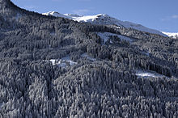

Welcome to Winter, this season comes after Fall and is before Spring and is regarded as the coldest and darkest season on Earth. Winter typically occurs around the start or end of December and typically lasts until late January or February or can even go till late March. During winter time, the days are shorter and the nights last longer unlike spring which is the opposite.
Human folklore will tend to associate winter with that of the dead or loss of life, that is due to how the darkness and cold of winter sweeps in and takes much of the life away from Earth leaving behind patches of dead/whittled plants which are unable to grow due to the low temperatures. however in aspects of human culture, Winter brings about many celebrations such as the ever popular Christmas and the introduction of a new year. Although the dreariness of Winter may split others apart due to the low temperatures and bad conditions, it also brings people together in celebration to celebrate prosperity, unity, and the hope of a better year.
